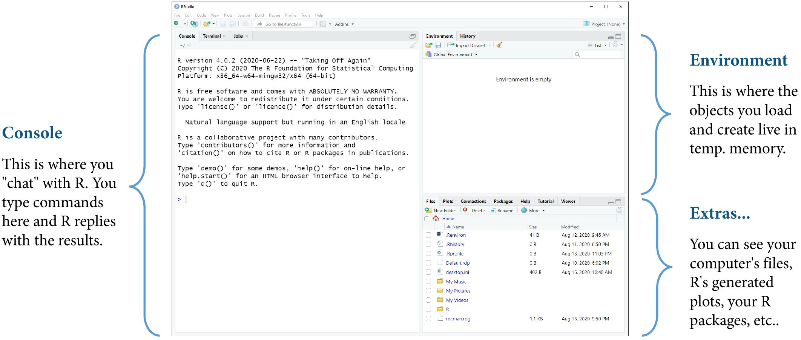

# Addition
10+3
10 + 3 # spaces are optional but recommended
# Subtraction
10 - 3
# Multiplication
10 * 3 # correct
10 x 3 # error
# Division
10 / 3 # correct
10 \ 3 # error
# Exponentiation
10 ^ 2
# Order of Operations
10 + 3 * 2
(10 + 3) * 2
# Negative Numbers
10 + -30
# Decimals and Fractions
1.234
(1 / 3)
# Leading and Trailing Zeros
09.870
# Large Numbers
9876543 # correct
9,876,543 # error
9 876 543 # errorStatistical Methods
RStudio / Console / Scripts
Fall 2025 | Course PSYC 790
Jeffrey M. Girard | Lecture 01b

Roadmap: Meeting R
R and RStudio
Console
Scripts
Activity
R and RStudio
Programming is a Superpower
Programming is how we talk to and control our amazing computers
It gives us power and flexibility
Everything we do in this course will be accomplished via programming
Programming will leave a record of what we did (i.e., code), so we can later reuse, adapt, and share it
Common Data Science Languages
General Purpose
- R (interactive, welcoming)
- Strengths: statistics, data wrangling, data visualization
- Weaknesses: relatively slow, not security-focused
- Python (popular, versatile)
- Strengths: automation, machine learning, data wrangling
- Weaknesses: relatively slow
- Java / C++ / Scala / Julia (faster but older and harder or newer and smaller)
Special Purpose
- JavaScript (web), SQL (databases), Swift (mobile), MATLAB (neuroscience), etc.
The R Ecosystem
- Think of your computer as the engine of a car
- It provides raw power for computation
- The R language is like the controls for the car
- It lets you apply and direct that power
- RStudio is like a fancy dashboard for the car
- It adds extra information and convenience
- An R package is like an add-on for the car
- It adds new features and capabilities
Installing R
Windows
- Open a web browser
- Visit cloud.r-project.org
- Click “Download R for Windows”
- Click the “base” subdirectory link
- Click “Download R-4.X.X” (e.g., 4.5.1)
- Run the downloaded .exe file
- Select all the default options
- Complete the installation wizard
Mac OS
- Open a web browser
- Visit cloud.r-project.org
- Click “Download R for macOS”
- Click “R-4.X.X.pkg” (e.g., 4.5.1)
- Run the downloaded .pkg file
- Select all the default options
- Complete the installation wizard
Installing RStudio
Windows
- Open a web browser
- Visit rstudio.com/download
- Scroll down until you find the table under the “All Installers” section
- Find the row for “Windows 10/11”
- Click “RStudio-2025.XX.X-XXX.exe”
- Run the downloaded .exe file
- Select all the default options
- Complete the installation wizard
Mac OS
- Open a web browser
- Visit rstudio.com/download
- Scroll down until you find the table under the “All Installers” section
- Find the row for “macOS 13+”
- Click “RStudio-2025.XX.X-XXX.dmg”
- Run the downloaded .dmg file
- Drag the RStudio icon to your Applications folder (if you want)
RStudio Window

Console
R will Grant your Wishes
R is like a well-meaning but overly literal genie
- It has the power to grant almost any wish
- But we must phrase our wishes carefully!
- We will always get what we ask for…
- …but not always what we wanted.
Mastering the R language means learning…
- How to properly phrase commands
- How to decipher error messages
- How to view code from R’s perspective
- How to detect and correct small mistakes
Communicating with R
- The Console is like a chat window with R
- You send a command to R and get a response
- Neither side of the conversation is saved
- An R Script is like an email thread with R
- You send many commands to R all at once
- Only your side of the conversation is saved
- A Quarto Document is like a scrapbook with R
- You can combine code and formatted text
- Both sides of the conversation are saved
Console Live Coding
Scripts
Script Live Coding
# Creating a new script
## Option 1: File > New File > R Script
## Option 2: Top bar: white square with green plus icon
## Option 3: Ctrl+Shift+N (Win) Cmd+Shift+N (Mac)
## A new pane will be added to the RStudio window called the Source Editor
# Entering commands into script
## In the Source Editor, we can add many lines of code to a script
## This allows for longer and more complex operations
## Think of it like drafting an email with many instructions
(1.4 + 2.8 + 9.3) / 3
30.1 - 24.7
# Running one line of code
## Hitting Enter (Win) or Return (Mac) does not run the code
## We can run one line of code at a time to see its results in console
## Option 1: With cursor on a line, click the Run button (top-right)
## Option 2: With cursor on a line, Ctrl+Enter (Win) or Cmd+Return (Mac)
# Running many lines of code
## We can run multiple lines of code at once to see results in console
## Option 1: Highlight lines with mouse, click the Run button (top-right)
## Option 2: Highlight lines with mouse, Ctrl+Enter (Win) or Cmd+Return (Mac)
## We can even run all lines of code in a script at once
## Option 1: Click the Source button (top-right)
## Option 2: Ctrl+Shift+Enter (Win) or Cmd+Shift+Return (Mac)
# Adding comments to scripts
## To help communicate the purpose of our code, we can add comments
## Comments will be ignored by R and are only there for human readers
## We always start a comment in an R script with a hash symbol: #
## I have been using comments in this very section you are reading!
# Calculate the average score on the quiz
(1.4 + 2.8 + 9.3) / 3
# Calculate the difference between exam 1 and exam 2
30.1 - 24.7
100 / 9 # we can even have comments at the end of line (start will still run)
# Saving the script file
## Option 1: File > Save
## Option 2: Source bar: blue and white disk icon
## Option 3: Ctrl+S (Win) Cmd+S (Mac)
## For now, save it wherever; we'll learn about Projects soon
## You will now have a .R file that you can keep and/or transfer
## Only the code/input is saved in the script, not the results/output